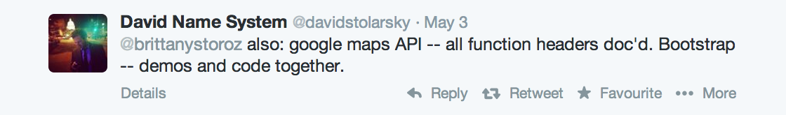

Write Real Good
"The New York Times is winning at journalism."
- The New York Times Internal Innovation Report, 2014
Github | brittanystoroz/presentations
Twitter | @brittanystoroz
First Things First
Take a reader-centered approach.
- If you are open-sourcing a JavaScript library, your docs code should be in... JavaScript! And definitely not in... anything else. Especially CoffeeScript. :skull:
Get to the bottom line.
- "Does this software do what I want to do?"
Balancing Your Context
- catering to low-context vs. high-context audiences
- how do we decide how much context to provide?
Just as we write modular code, we should write modular documentation.
What?
Modularity in documentation is about usability and accessibility
How Do Readers Read?
- Low-context users read sequentially
- High-context readers ⌘ + F
Getting Feedback & Adapting To It
- write your docs as you write your code
- fine, don't, but get a friend to help you out
- research how your readers use your software, and update docs accordingly
Other Things We Care About
Conciseness

Demos
Fugliness